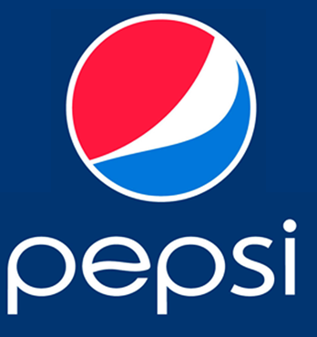

38-media-queries
Diseño Web Adaptativo con Reglas @media (Temática Pepsi)
Adaptabilidad Responsiva con Media Queries
Redimensiona el ancho de tu navegador para comprobar cómo cambian los colores, los bordes y el estado visual del diseño de forma automática según la resolución.

Pepsi Responsive Design
Las reglas condicionales ajustan el estilo visual del componente en tiempo real.
Estado actual del Viewport:
- @media (min-width: px): Aplica bloques de estilos personalizados cuando la pantalla alcanza o supera el ancho especificado.
- Diseño Adaptativo (RWD): Permite que una misma página web ofrezca una experiencia visual óptima en teléfonos, tablets y computadoras.
- Puntos de quiebre (Breakpoints): Umbrales clave donde la interfaz reorganiza su estructura o paleta de colores.